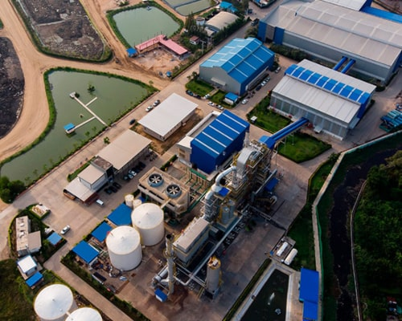
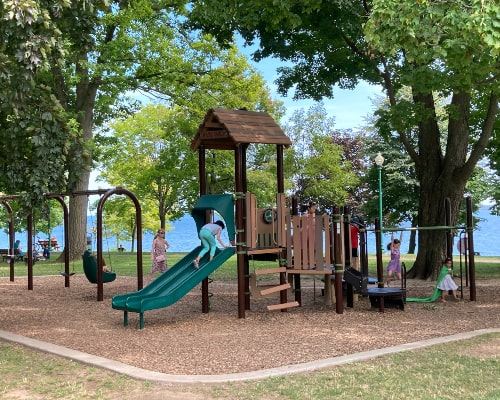
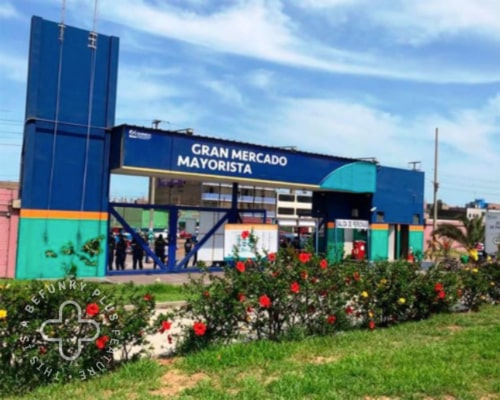
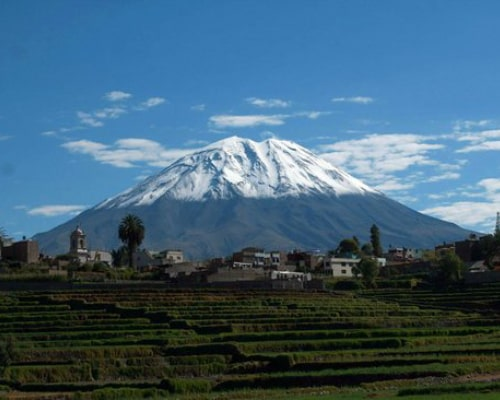
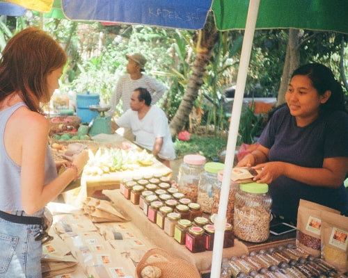
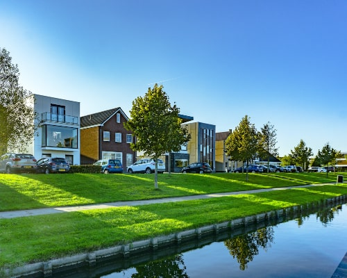
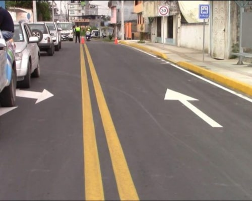

PROPUESTAS
Regresar
Seguridad Ciudadana
- Creación del Centro de Operaciones y Monitoreo de Seguridad ciudadana.
- Sistema de Vigilancia Integrado (Juntas Vecinales, Serenazgo, Policia Nacional, Bomberos).
Medio Ambiente
- Creación de una Planta de Tratamiento de Residuos Sólidos.
- Adecuada e innovadora Gestión de Residuos Sólidos, no más basura en nuestros barrios.

Cultura y Deporte
- Mejoramiento de Parques y Jardines TE QUIERO VERDE PAUCARPATA.
- Mejoramiento de Canchas y Lozas Deportivas, apoyo total al Deporte.

Infraestructura
- Creación del Mercado Mayorista de Paucarpata.
- Plan de Drenaje Integral.
- Protección y Encauzamiento de Quebradas y Torrenteras.

Turismo
- Promoción de la Ruta de los Andenes Floridos.

Reactivación económica
- Creación del PROCOMPITE Distrital, apoyo a los pequeños y medianos productores.
- Ejecución de Obras por Administración Directa, Chamba para Paucarpata.

Saneamiento Físico Legal
- Procesos de formalización de la propiedad conforme a la Ley 31560.
- Zonificación a través del Plan de Desarrollo Urbano.

Infraestructura Peatonal
- Pistas y Veredas Integral parte alta de Paucarpata.
- Agua y Desagüe parte alta de Paucarpata.
- Mejoramiento del Cementerio el Cebollar, pistas nuevas parte media y baja de Paucarpata.

Regresar